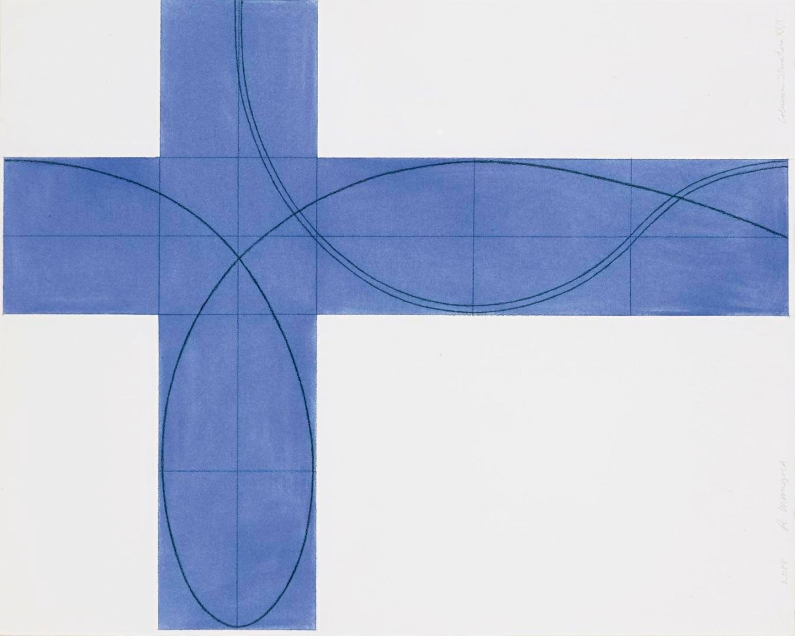
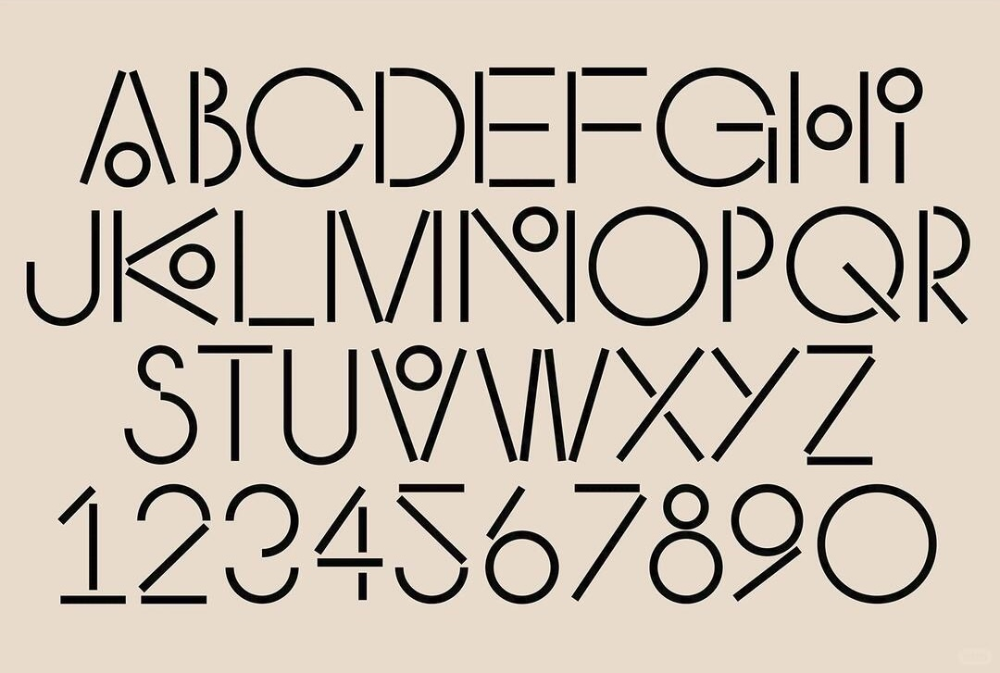
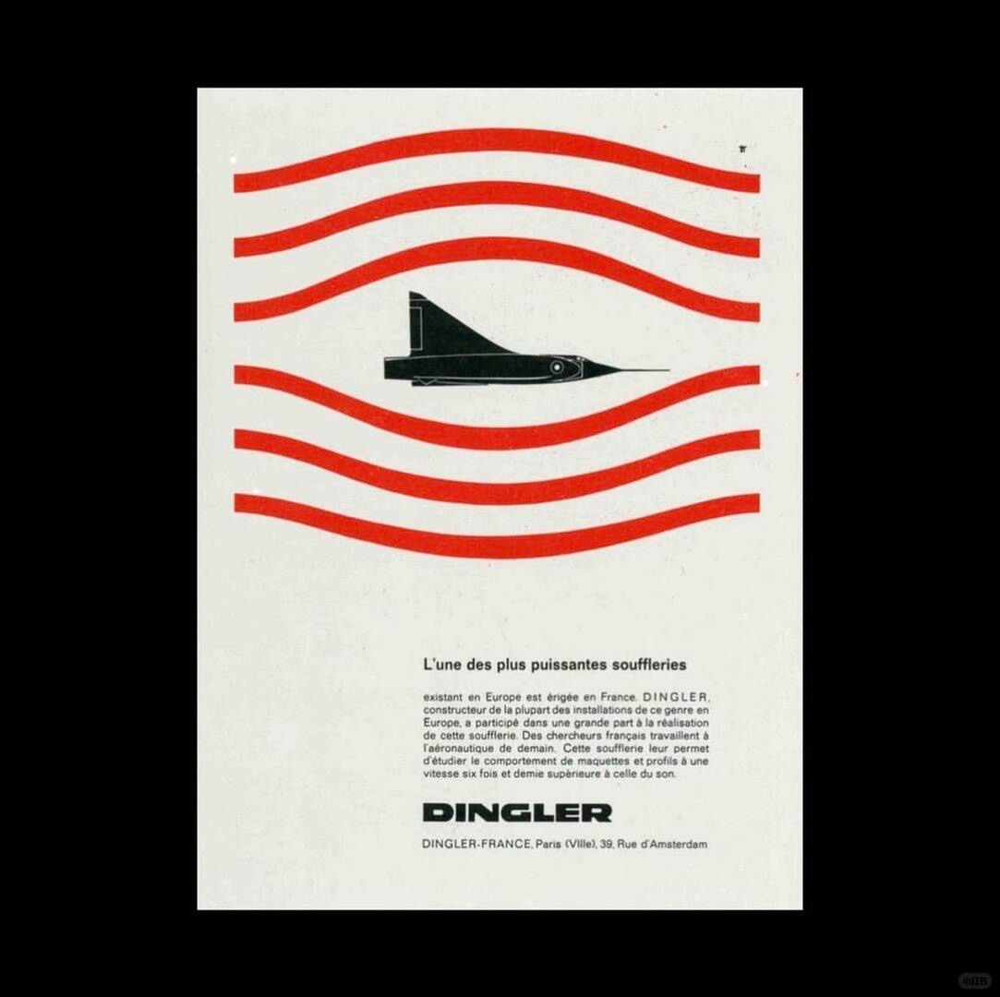

Why Minimalism Feels Powerful
为什么极简主义拥有 视觉权力？
READ ARTICLE →Journal / Field Notes
关于图像、创作与观看方式的研究记录。
Tintory Studio 的视觉档案与思想笔记。

为什么极简主义拥有 视觉权力？
READ ARTICLE →
字体如何建立空间秩序。
READ ARTICLE →
海报如何保存时代记忆。
READ ARTICLE →为什么开始建立一个 关于视觉考古的工作室。
一次摄影散步中的视觉发现。
如何建立个人视觉档案。
QUESTION
How does an image
construct memory?
METHOD
How vision is shaped
by culture.
How does an image construct memory?
READ →How vision is shaped by culture.
READ →Why images remain.
READ →Reality and representation.
READ →